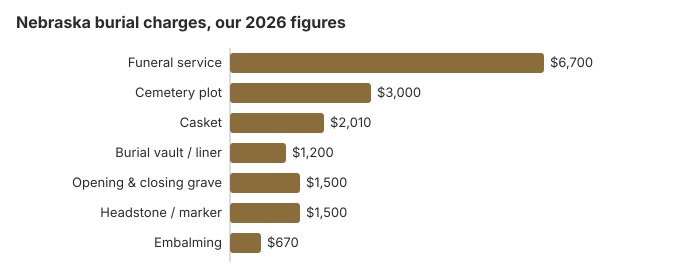

Burial Costs in Nebraska (2026)
A Nebraska burial runs about $14,910 to $19,410 on our estimates, cemetery charges included. Roughly $6,700 of that is the funeral home's service and around $3,000 the plot, with the casket, vault, grave opening and a marker making up the balance. Nebraska is also one of the few states where a licensed funeral director has to be involved, so this page covers that rule, county burial help under general assistance, and the four veterans cemeteries in the state.
Nebraska Burial Costs by Item
| Charge | Nebraska estimate | Low to high |
|---|---|---|
| Funeral service | $6,700 | $5,025 – $8,710 |
| Cemetery plot | $3,000 | $1,500 – $6,000 |
| Casket | $2,010 | $670 – $5,360 |
| Burial vault / liner | $1,200 | $800 – $10,000 |
| Opening & closing grave | $1,500 | $500 – $3,000 |
| Headstone / marker | $1,500 | $500 – $5,000+ |
| Embalming | $670 | $500 – $1,500 |
How we arrived at the Nebraska numbers: through our own cost model, not a survey of Nebraska funeral homes or cemeteries, so use them as a yardstick, not as a quote or professional advice. Read our method for the details, and the disclaimer.

Including the cemetery's fees, Nebraska burials on our estimates fall between $14,910 and $19,410; the casket, vault and marker the family picks decide where.
Kinds of Burial a Nebraska Family Can Choose
- Traditional burial. A viewing and funeral service, then burial in a casket; the funeral home's part alone is about $6,700 in Nebraska.
- Direct burial. Burial soon after death with no embalming, viewing or ceremony. In Nebraska a licensed funeral director still supervises the interment, and the cemetery's charges still apply.
- Green burial. No embalming, a biodegradable container and usually no vault, where a Nebraska cemetery permits it. Learn about green burial
Ways to Lower a Nebraska Burial Bill
Places a Nebraska family can usually trim the cost:
- Ask locally about cemeteries. Nebraska's small county, township, church and fraternal cemeteries seldom advertise; the county clerk can tell you which are near you.
- Work with independent funeral homes: ownership alone does not set the price; the itemized price list every Nebraska home must hand you does, so line those lists up item by item. Whichever home you choose takes on the paperwork. Neb. Rev. Stat. 71-605 makes the funeral director and embalmer in charge fill out the death certificate, and the attending physician, physician assistant or nurse practitioner must sign it electronically within twenty-four hours.
- Consider a direct burial. Leaving out embalming, a viewing and a ceremony takes those charges off the bill; the family can still gather at the grave or hold a memorial later.
Getting Nebraska Quotes Side by Side
Phone two or three Nebraska funeral homes. The FTC Funeral Rule requires them to give prices by phone, so ask for the basic services fee, the direct burial price and the lowest casket on the list, and compare those before you visit.
Burial Resources
- Funeral Consumers AllianceNonprofit consumer advocacy for funeral pricing
- Headstone & Monument GuideCosts, types, and buying tips
- Green Burial OptionsEco-friendly and natural alternatives
- Best Online Casket RetailersCaskets bought online often cost less
- Best Burial InsuranceCompare plans to cover burial expenses
Compare Funeral Costs
- Average Funeral Cost in 2026National cost breakdown with real prices
- Cremation vs. Burial Cost ComparisonSide-by-side price comparison to help you decide
- Funeral Cost BreakdownEvery line item explained: know what you're paying for
- Cheapest Funeral OptionsLower-cost alternatives, with typical price ranges
- Direct Cremation: Most Affordable OptionNFDA 2023 median $2,645 with a family-supplied container (latest available)
- How to Compare Funeral PricesStep-by-step guide to getting the best price
You may buy the casket or headstone outside the funeral home or cemetery. Our guide to online casket sellers and headstone price guide help you compare, and see the payment assistance guide if Nebraska costs are a strain.
Frequently Asked Questions
What does a Nebraska burial cost?
By our estimate a Nebraska burial costs $14,910 to $19,410: the service is about $6,700 and the plot $3,000, with a $2,010 casket, a $1,200 vault, $1,500 for the grave opening and a headstone anywhere from $500 to $5,000.
Will a Nebraska cemetery insist on a vault?
Usually, though the requirement comes from cemetery policy rather than Nebraska law. Ask each cemetery in writing whether a simpler grave liner is acceptable; vaults cost from about $800 to $10,000 against the $1,200 estimate in our table.
What is the cheapest burial in Nebraska?
Direct burial, which skips embalming, a viewing and a ceremony, is the lowest-cost option. You can supply a casket bought elsewhere without a handling fee under the FTC Funeral Rule, and an eligible veteran's grave and headstone are free in a national cemetery.
How should I compare Nebraska cemeteries?
Ask the county clerk for the smaller public and church cemeteries near you, then get a written price from each cemetery for the plot, opening and closing, and its vault and marker rules, so you can compare like with like.
What gets added to the Nebraska estimate?
Beyond the $14,910 to $19,410 range come cash advances: the funeral home buys certified death certificates, a published obituary and flowers for you and bills them at cost. If a grave ever has to be moved, a disinterment permit and a supervising funeral director add to that.
Is green burial possible in Nebraska?
Only some Nebraska cemeteries allow it, so call ahead. A family can also ask a conventional cemetery whether it will waive the vault and accept an unembalmed burial in a simple container. Our green burial guide lists the questions to ask.
More for Nebraska
Moving a grave in Nebraska
Nebraska keeps a funeral director involved in every step at the grave. Any interment, disinterment or reinterment has to be carried out under the direct supervision of a licensed funeral director and embalmer. Moving a body after burial also takes a disinterment permit from the Department of Health and Human Services. The person with the legal right to control the remains, or a county attorney, makes the request on the department's form, and the funeral director who will supervise signs the application (Neb. Rev. Stat. § 71-605; checked October 29, 2026).
- Cemetery's role: a sexton may not let a grave be opened until the cemetery has the completed permit.
- After the move: the funeral director dates and signs the permit and files it with the department within 10 days.
- More than one body: a court order is needed before the department will issue the permit.
Nebraska's board, the funeral director rule and veterans cemeteries
The Nebraska Board of Funeral Directing and Embalming (402-471-2117) licenses the funeral homes that arrange burials and takes complaints about them. It can also point you to the office that handles a complaint about a cemetery.
Families in Nebraska cannot carry out a burial on their own; the Funeral Consumers Alliance counts it among nine such states. Neb. Rev. Stat. §§ 38-1400s and 71-605 leave the death certificate, transport, permits, supervision of a home burial and any cremation arrangement to a licensed funeral director, and the cemetery opens and closes the grave.
A burial needs a disposition permit. If the family chooses cremation instead, Nebraska sets no waiting period, though the permit is still required (Neb. Rev. Stat. 71-605).
County burial help
Every Nebraska county has to include burial expenses in its general assistance standards (Neb. Rev. Stat. § 68-133), and the county where the person had legal settlement is the one responsible (§ 68-131). For a poor person without settlement who had received temporary help, the county board must provide a decent burial (§ 68-146). (Source: Neb. Rev. Stat. §§ 68-131, 68-133, 68-146.) Social Security's $255 payment to a surviving spouse or child is far less than the $3,000 Nebraska plot estimate.
Veterans
For a qualifying veteran, a national cemetery provides the grave, opening and closing, liner and headstone without charge. Nebraska has two, Omaha National Cemetery (402-253-3949) and Fort McPherson National Cemetery (308-582-4433), and the state runs veterans cemeteries at Alliance (308-763-2958) and Grand Island (308-661-1987) (source: VA National Cemetery Administration).
Nebraska checklist
- Get the cemetery's own prices for the plot, opening and closing, vault or liner, and marker; they are usually billed separately.
- Ask whether it will accept a headstone bought from another seller.
- Before asking for county help, confirm which county was the person's legal settlement.
- For a veteran, check eligibility with Omaha or Fort McPherson first.
- Misleading burial prices can be reported to the board on 402-471-2117.